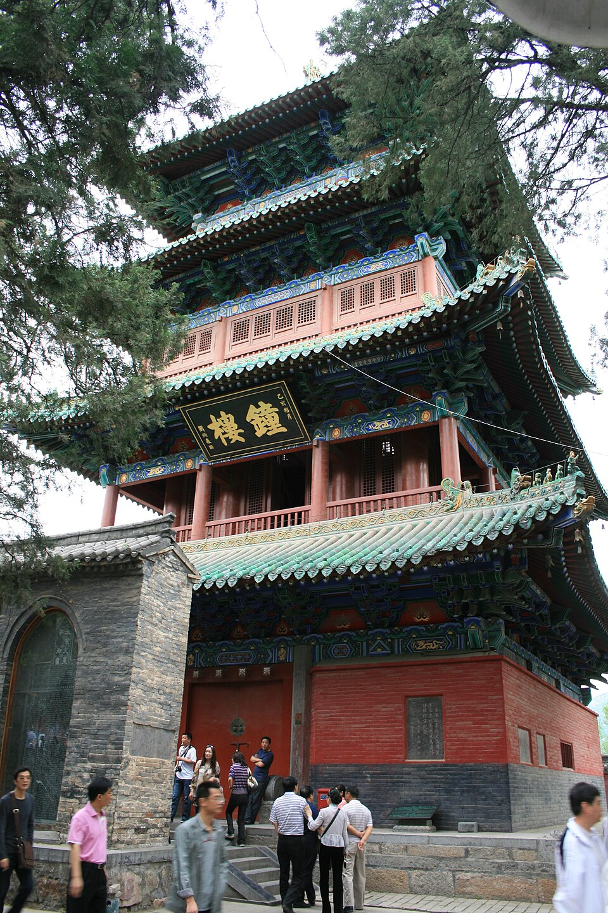

Czym jest kung-fu, historia klasztoru Shaolin, buddyzm Chan, etyka wude i rola wytrwałości
Aktualizacja: 2026-06
Kung-fu Shaolin (Shaolin quan, 少林拳 — „pięść Shaolin") to jedna z najstarszych i najbardziej znanych chińskich sztuk walki. Wywodzi się z klasztoru Shaolin i przez stulecia rozwijała się w ścisłym związku z buddyzmem Chan (znanym na Zachodzie jako Zen). To nie tylko zbiór technik walki, lecz kompletna ścieżka rozwoju — łącząca trening ciała, dyscyplinę umysłu i etykę.

Kolebka Shaolin quan u podnóża góry Song w prowincji Henan.
Słowo kung-fu (pinyin: gōngfu, 功夫) w języku chińskim nie oznacza wyłącznie walki. Dosłownie to umiejętność lub mistrzostwo zdobyte dzięki czasowi i wysiłkowi. W tym sensie „kung-fu" może mieć mistrz kaligrafii, kucharz albo rzemieślnik — każdy, kto przez lata cierpliwej pracy doszedł do biegłości w swoim fachu.
Dopiero na Zachodzie termin ten zawęził się niemal wyłącznie do chińskich sztuk walki. W samych Chinach ogólnym określeniem sztuk walki jest raczej wushu (武術 — dosłownie „sztuka wojenna / militarna"). Warto rozróżniać te pojęcia:
| Termin | Znaczenie |
|---|---|
| Gongfu / kung-fu (功夫) | Umiejętność i mistrzostwo wypracowane przez czas i trud — niekoniecznie związane z walką. |
| Wushu (武術) | Ogólny, zbiorczy termin na chińskie sztuki walki; dziś także nazwa sportowej, widowiskowej dyscypliny. |
| Quan / chuan (拳) | „Pięść", „styl walki" — element nazw stylów, np. Shaolin quan, Taiji quan. |
| Taolu (套路) | Forma — ułożona sekwencja ruchów i technik (szerzej w rozdziale o formach). |
Klasztor Shaolin (少林寺, Shàolín sì — „klasztor w młodym lesie") leży u podnóża góry Song (Songshan) w prowincji Henan w środkowych Chinach. Założono go pod koniec V wieku n.e. (ok. 495 r.) jako ośrodek buddyjski. Z czasem stał się legendarną kolebką sztuk walki.
Z klasztorem wiąże się legenda Bodhidharmy (chiń. Damo, 達摩) — indyjskiego mnicha, któremu tradycja przypisuje przyniesienie buddyzmu Chan do Chin. Według podań mnisi byli osłabieni długimi godzinami nieruchomej medytacji, więc Bodhidharma miał nauczyć ich zestawu ćwiczeń wzmacniających ciało i oddech. Z tych ćwiczeń — jak głosi legenda — wyrosły z czasem szaolińskie sztuki walki.
Na przestrzeni wieków w klasztorze rozwinął się bogaty system Shaolin quan — z charakterystycznymi stójkami, formami (taolu) i technikami inspirowanymi m.in. ruchami zwierząt. Mnisi-wojownicy zasłynęli sprawnością i — według kronik — bywali wzywani do obrony lub do walk u boku władców, co zbudowało wokół Shaolin trwałą sławę. Dziś klasztor jest też symbolem kultury i celem pielgrzymek oraz turystów z całego świata.
| Pojęcie | Wyjaśnienie |
|---|---|
| Shaolin si | Klasztor buddyjski w prowincji Henan, u podnóża góry Song — kolebka stylu. |
| Bodhidharma (Damo) | Legendarny mnich, któremu przypisuje się przyniesienie Chan i ćwiczeń dla mnichów. |
| Shaolin quan | System sztuk walki klasztoru: stójki, formy, techniki rąk i nóg. |
| Mnisi-wojownicy | Mnisi łączący praktykę buddyjską z treningiem walki; źródło sławy Shaolin. |
Sercem tradycji Shaolin jest buddyzm Chan (禪) — chińska szkoła, z której wywodzi się japoński Zen. Chan kładzie nacisk na bezpośrednie doświadczenie, wyciszenie umysłu i medytację (zuochan — „siedzenie w medytacji"), a nie wyłącznie na studiowanie tekstów.
W Shaolin trening fizyczny i praktyka duchowa są nierozdzielne. Mówi się o jedności ciała i umysłu: powtarzalne, wymagające ćwiczenia uczą skupienia, cierpliwości i panowania nad sobą, a medytacja i dyscyplina nadają treningowi głębszy sens.
Wude (武德 — „cnota / moralność wojenna") to kodeks etyczny adepta sztuk walki. W tradycji Shaolin uznaje się, że bez wude technika jest niepełna, a nawet niebezpieczna. Siłę zdobywa się po to, by służyła dobru, nie przemocy.
Shaolin nie obiecuje szybkich efektów. Sama nazwa „kung-fu" przypomina, że mistrzostwo to owoc czasu i wysiłku — postępy mierzy się latami systematycznej praktyki, a nie tygodniami.
Fundamentem całej drogi jest ji ben gong (基本功) — „praca nad podstawami". To zestaw fundamentalnych ćwiczeń: stójki utrzymywane na czas, powtarzalne kopnięcia i praca nóg, mozolne szlifowanie pojedynczych ruchów. Dopiero solidne podstawy pozwalają bezpiecznie sięgać po formy, techniki zaawansowane i broń (szerzej w rozdziale o treningu).